Emmanouil Giannisakis and Gilles Bailly, researchers at Sorbonne Université, are studying how people transit from menu selection to keyboard shortcuts. They have a dataset about how users' behavior changes regarding performance and strategy choice while they selected commands.
The goal of this visualization is to present the entire data set in a visual form so that they can observe and compare the data of each subject, and discover some common patterns.
This is the project of the course Infomation Visualization at Université Paris Sud. I worked with Lemeng Xu. My work is coding and designing the visualization.
In the class, we learned how to use visual elements, like shape, size, color, shadow, transparancy and motion, to represent the data and the relationship behind it.
At first, we talked with Emmanouil and Gilles to know what the question is. They introduced the dataset to us and showed their past work. Then we found their main concern is about TRANSITION.
Since there are about 20k rows of data, the concept of our design is to divide it, first by subjects, then by commands and finally by trials. Different information is displayed according to the different views.
In the sketch phase, we used the 10 plus 10 method to come up some ideas. Based on a common starting point, group members work individually to quickly sketch several ideas each, making around 10 ideas per group. They share the ideas within the group and choose one sketch as the starting point for the next round.
The graphs in the first column are from the first phase. The other graphs are some variations.
Then we talked with them again about the first demo and our ideas. They liked it and wanted to see some high-level information. Then we add some new graphs and modified our design based on the first demo.
we used the color map of red, yellow and purple to represent different phases of transitions. Grey means no transition. Vivid colors are clear on the grey background and can attract user's attention.
The advantage of this layout is that researchers can compare the data of 42 subjects and go deep into the experimental data of each subject to seek subtle and interesting findings.
We used bar chart to show the data of one subject. Each subject had different action preference. The bar chart showed how the subject reacted to different commands and his preference.
The other thing we cared is the action time. We had the time of each trial. At first, we ploted a scatter graph. Then we changed it to the line graph to see the trends better. Finally, we fill the color to represent the transition phase. The white point means the average time of each phase.
To compare the estimated phase and actual states of each trials better, we added a grid graph showing the method a subject used in each trial.
We decided to develop this visualization on web. Comparing to other solutions, like tableau or static pictures, web-based visualization can be highly customized.
The interaction method is mouse and keyboard. Users can use mouse to select subjects and use keyboard to switch the subject they are viewing. Then we came up an idea to use the mouse cursor as an indicator showing the detail information.
The cursor moves on the line chart. The corresponding grid will be highlighted and information will be displayed.